Code
# Map chart of Deaths at Health Facilities
ggplot(st_as_sf(site_death_map)) +
geom_sf(aes(fill=health_facilities, geometry=geometry)) +
scale_fill_gradient(name="Deaths at Health Facilities", low="yellow", high="red", na.value="grey50")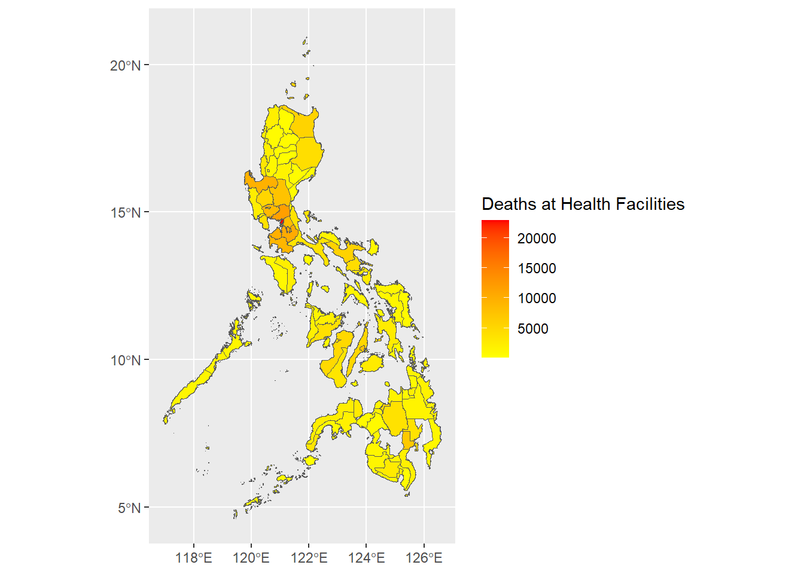
# Map chart of Deaths at Health Facilities
ggplot(st_as_sf(site_death_map)) +
geom_sf(aes(fill=health_facilities, geometry=geometry)) +
scale_fill_gradient(name="Deaths at Health Facilities", low="yellow", high="red", na.value="grey50")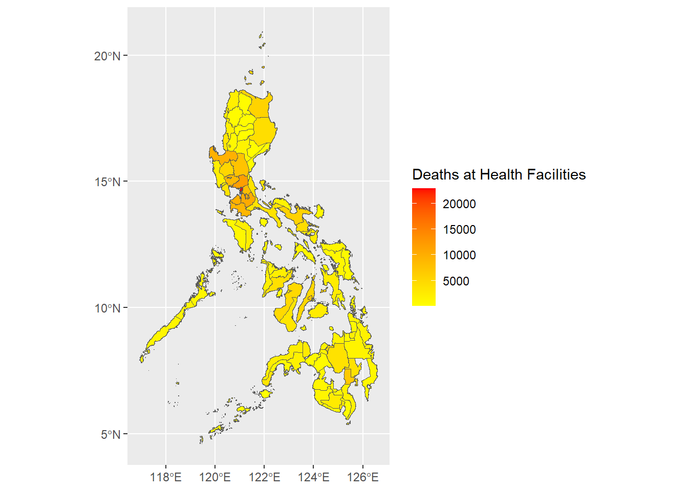
# Map chart of Deaths at Home
ggplot(st_as_sf(site_death_map)) +
geom_sf(aes(fill=home, geometry=geometry)) +
scale_fill_gradient(name="Deaths at Home", low="yellow", high="red", na.value="grey50")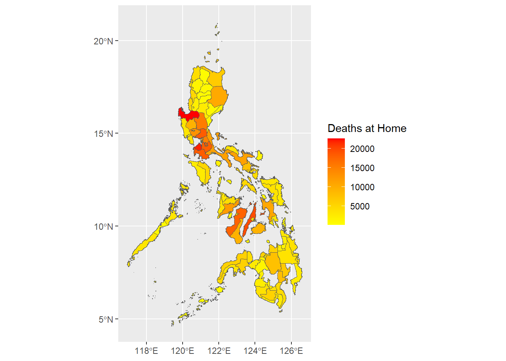
# Map chart of Deaths at Other sites
ggplot(st_as_sf(site_death_map)) +
geom_sf(aes(fill=others, geometry=geometry)) +
scale_fill_gradient(name="Deaths at Other sites", low="yellow", high="red", na.value="grey50")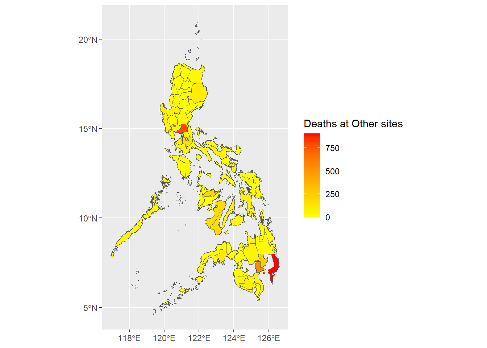
# Map chart of Deaths at Not Stated sites
ggplot(st_as_sf(site_death_map)) +
geom_sf(aes(fill=not_stated, geometry=geometry)) +
scale_fill_gradient(name="Deaths at Not Stated sites", low="yellow", high="red", na.value="grey50")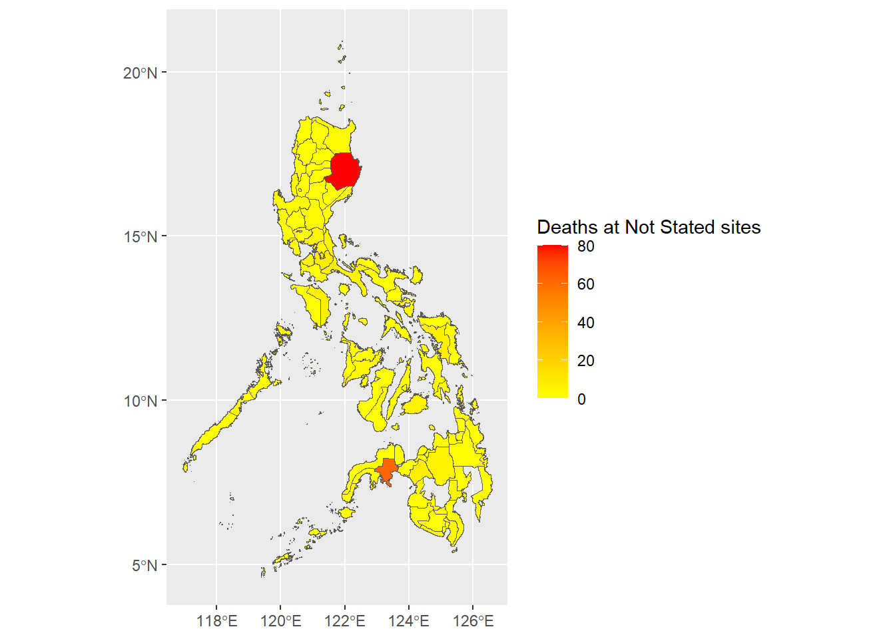
# Map chart of Total Deaths
ggplot(st_as_sf(site_death_map)) +
geom_sf(aes(fill=total, geometry=geometry)) +
scale_fill_gradient(name="Total Deaths", low="yellow", high="red", na.value="grey50")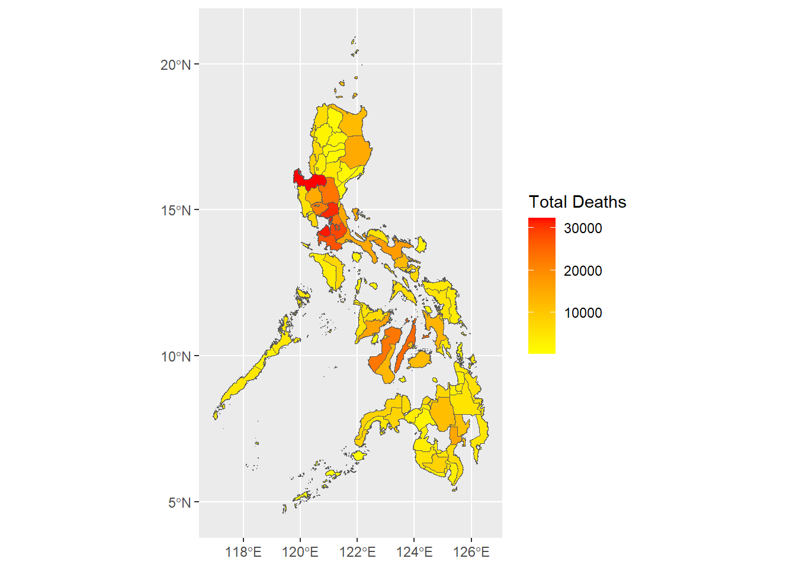
# Bar chart of deaths by attended-ness
attendedness <- c("attended", "unattended", "not_stated")
label <- c("Attended", "Not Attended", "Not Stated")
total_deaths <- data.frame(attendedness, label)
for(i in 1:length(total_deaths$attendedness)){
total_deaths$freq[i] <- sum(site_death_map[attendedness[i]])
}
ggplot(total_deaths) +
geom_bar(aes(label, freq, fill=label), stat="identity")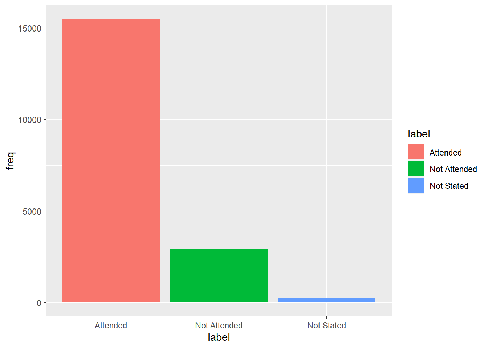
# Bar graph comparing each professional
profession <- c("private", "public", "hospital", "others")
label <- c("Private Physician", "Public Health Officer", "Hospital Authority", "Others")
total_deaths <- data.frame(profession, label)
for(i in 1:length(total_deaths$profession)){
total_deaths$freq[i] <- sum(site_death_map[profession[i]])
}
ggplot(total_deaths) +
geom_bar(aes(profession, freq, fill=profession), stat="identity")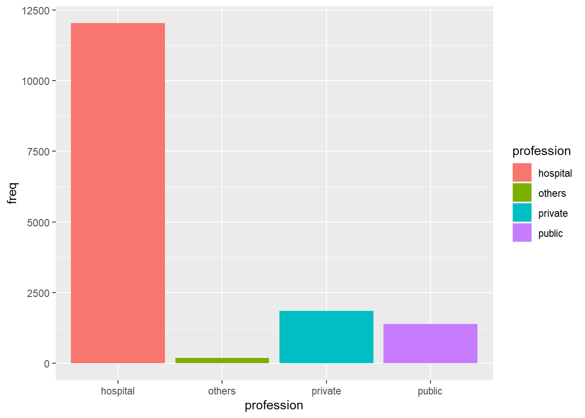
# Map chart of Attended Deaths
ggplot(st_as_sf(site_death_map)) +
geom_sf(aes(fill=attended, geometry=geometry)) +
scale_fill_gradient(name="Attended Deaths", low="yellow", high="red", na.value="grey50")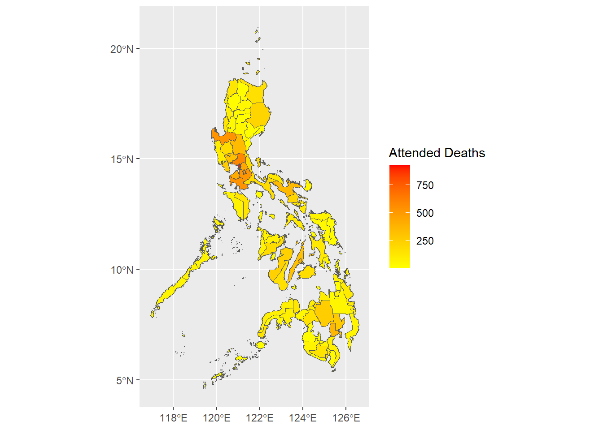
# Map chart of Unattended Deaths
ggplot(st_as_sf(site_death_map)) +
geom_sf(aes(fill=unattended, geometry=geometry)) +
scale_fill_gradient(name="Unattended Deaths", low="yellow", high="red", na.value="grey50")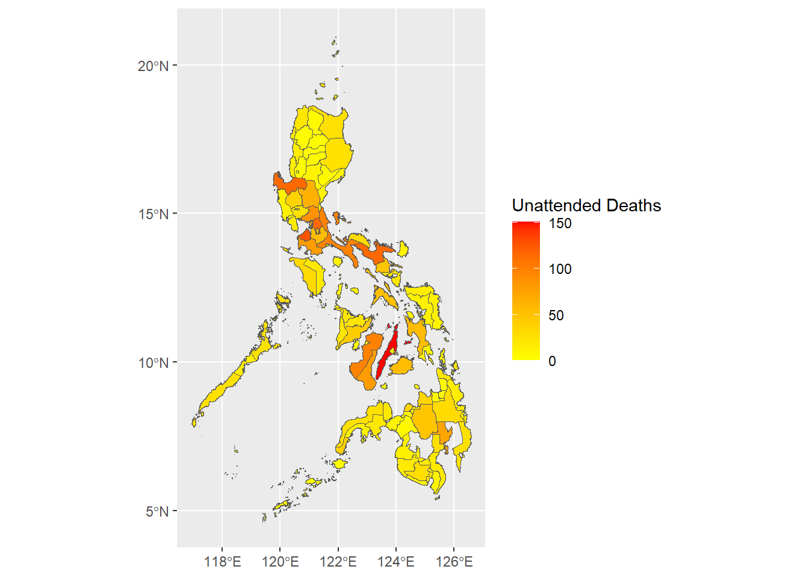
# Map chart of Not stated deaths
ggplot(st_as_sf(site_death_map)) +
geom_sf(aes(fill=not_stated, geometry=geometry)) +
scale_fill_gradient(name="Not stated deaths", low="yellow", high="red", na.value="grey50")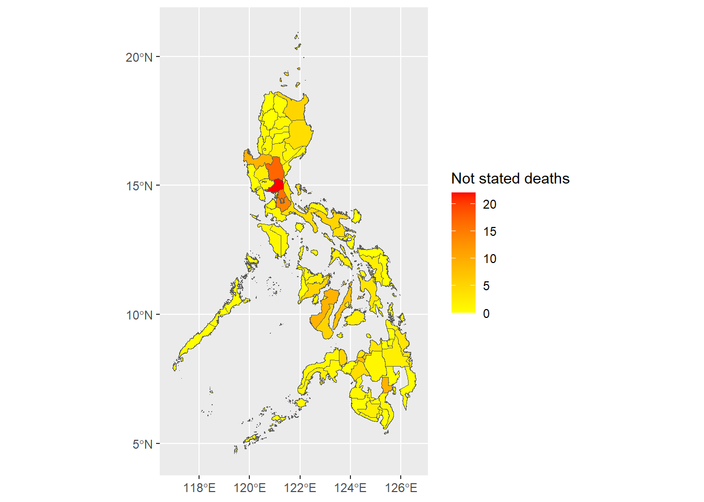
# Map chart of Attending Private Physician
ggplot(st_as_sf(site_death_map)) +
geom_sf(aes(fill=private, geometry=geometry)) +
scale_fill_gradient(name="Attending Private Physician", low="yellow", high="red", na.value="grey50")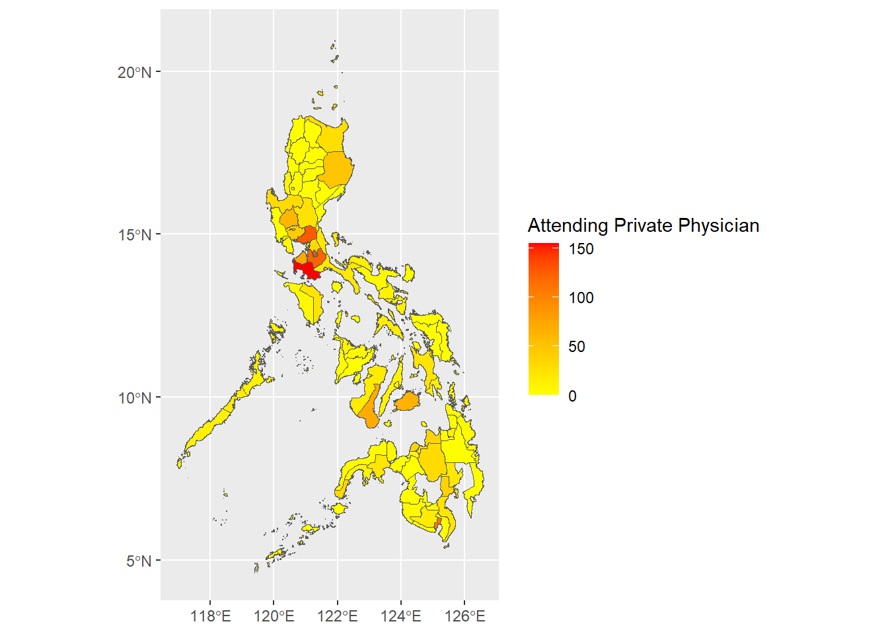
# Map chart of Attending Public Health Officer
ggplot(st_as_sf(site_death_map)) +
geom_sf(aes(fill=public, geometry=geometry)) +
scale_fill_gradient(name="Attending Public Health Officer", low="yellow", high="red", na.value="grey50")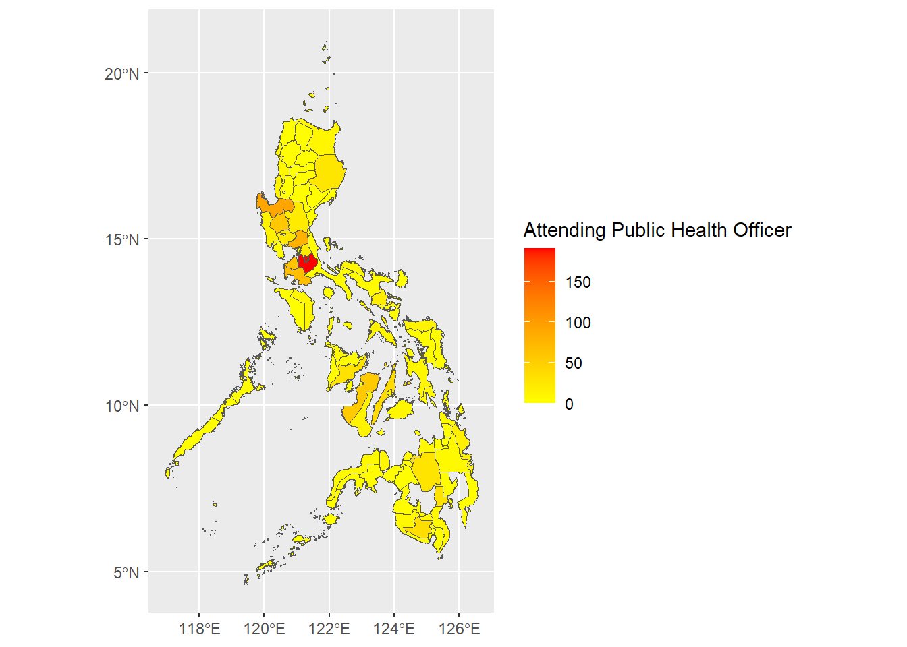
# Map chart of Attending Hospital Authority
ggplot(st_as_sf(site_death_map)) +
geom_sf(aes(fill=hospital, geometry=geometry)) +
scale_fill_gradient(name="Attending Hospital Authority", low="yellow", high="red", na.value="grey50")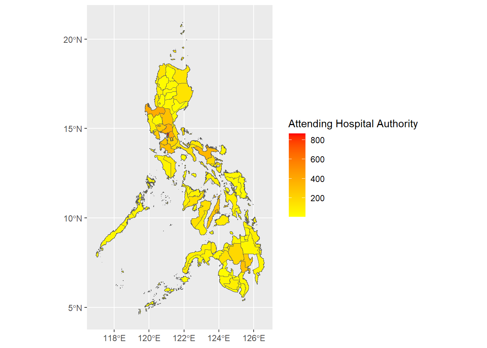
# Map chart of Others
ggplot(st_as_sf(site_death_map)) +
geom_sf(aes(fill=others, geometry=geometry)) +
scale_fill_gradient(name="Others", low="yellow", high="red", na.value="grey50")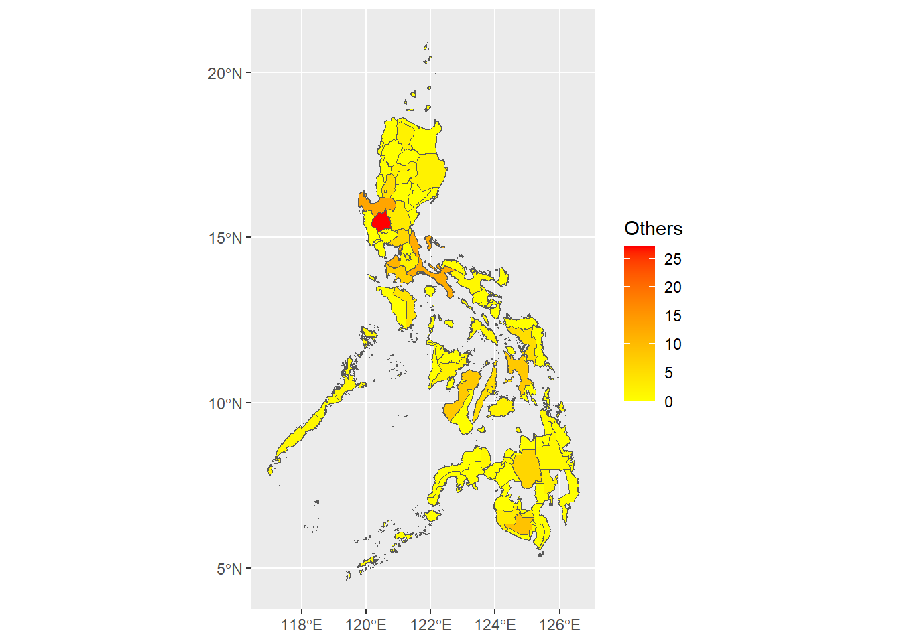